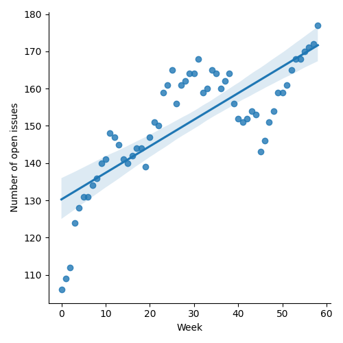
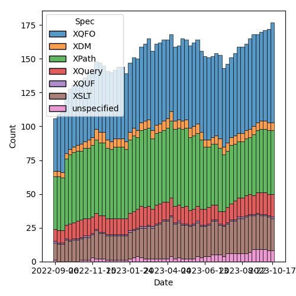
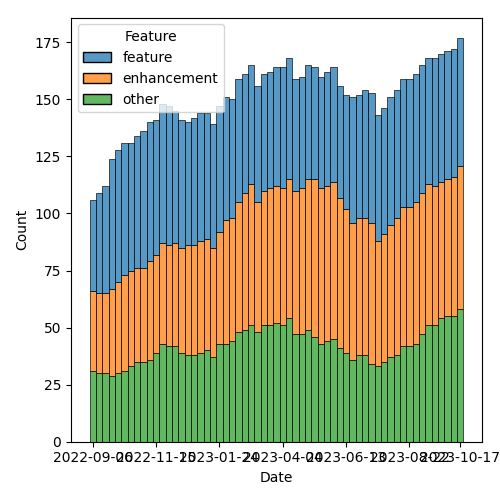

QT4 CG Meeting 051 Minutes 2023-10-24
Table of Contents
- Draft Minutes
- Summary of new and continuing actions
[0/8] - 1. Administrivia
- 2. Technical Agenda
- 3. Any other business?
- 4. Adjourned
Agenda index / QT4CG.org / Dashboard / GH Issues / GH Pull Requests
Draft Minutes
Summary of new and continuing actions [0/8]
[ ]QT4CG-046-01: MK to continue the work on #129 for the other specs (we accepted #703)[ ]QT4CG-050-02: MP to attempt to summarize this discussion and identify specific issues[ ]QT4CG-051-01: NW to attempt to craft a new issue for the remaining items in #129[ ]QT4CG-051-02: NW to attempt to draft a proposal for fn:invisible-xml[ ]QT4CG-051-03: MK to check that in our view schema components don’t indirectly reference the schema root[ ]QT4CG-051-04: DN to make the point that in simple, static cases, the arrow operators may be better.[ ]QT4CG-051-05: DN to correct the typo in item 3 “could be sequence” => “could[ ]QT4CG-051-06: MK to help DN with the markup in fn:chain examples.
1. Administrivia
1.1. Roll call [9/11]
[X]Reece Dunn (RD)[ ]Sasha Firsov (SF)[X]Christian Grün (CG)[X]Joel Kalvesmaki (JK) [:10-][X]Michael Kay (MK)[X]John Lumley (JL)[X]Dimitre Novatchev (DN)[X]Wendell Piez (WP)[ ]Ed Porter (EP)[X]C. M. Sperberg-McQueen (MSM)[X]Norm Tovey-Walsh (NW). Scribe. Chair.
1.2. Accept the agenda
Proposal: Accept the agenda.
Accepted.
1.2.1. Status so far…

Figure 1: “Burn down” chart on open issues

Figure 2: Open issues by specification

Figure 3: Open issues by type
1.3. Approve minutes of the previous meeting
Proposal: Accept the minutes of the previous meeting.
Accepted.
1.4. Next meeting
ATTENTION: Europe and the United Kingdom switch from daylight saving time to standard time on Sunday, October 29, 2023. The meeting on Tuesday, 31 October 2023, will occur at a time one hour later in The United States.
The next meeting is scheduled for Tuesday, 31 October 2023.
No regrets heard.
1.5. Review of open action items [5/7]
[ ]QT4CG-046-01: MK to continue the work on #129 for the other specs (we accepted #703)[X]QT4CG-046-04: CG to flesh out changes related to annotations in other parts of the specs[X]QT4CG-046-05: NW to updated parse-uri to use decode-from-uri (issue #566)[X]QT4CG-048-02: MK to clean up the proposal for adding @as to xsl:sequence and elsewhere- MK proposes to close as unclear
[ ]QT4CG-050-02: MP to attempt to summarize this discussion and identify specific issues[X]QT4CG-050-01: MK to revise #749 to retain only the editorial parts.[X]QT4CG-050-03: MK to make the proposed editorial improvements to PR #659
1.6. Review of open pull requests and issues
1.6.1. Blocked
The following PRs are open but have merge conflicts or comments which suggest they aren’t ready for action.
- PR #538: 480: Attempt to allow xs:string to be 'promoted to' xs:anyURI
1.6.2. Merge without discussion
The following PRs are editorial, small, or otherwise appeared to be uncontroversial when the agenda was prepared. The chairs propose that these can be merged without discussion. If you think discussion is necessary, please say so.
- PR #766: 765 Update version references etc to 4.0 status
- PR #763: 686: XQFO diagnostic function documentation
- PR #762: 758: XQFO minor edits 3
- PR #749: 653: Add string literals E".." and L".." to control entity expansion
- PR #659: 647: schema location hints
Proposal: Merge without discussion.
Accepted.
1.6.3. Close without action
It has been proposed that the following issues be closed without action. If you think discussion is necessary, please say so.
- Issue #383: fn:deep-equal: Order of child elements (unordered-elements)
Proposal: Close without action.
Accepted.
1.6.4. XSLT focused
The following PRs appear to be candidates for a future XSLT-focussed meeting.
These issues identify the XSLT-focused changes that have been made to the specifications but which have not been established by the community group as the status quo.
1.6.5. Substantive PRs
The following substantive PRs were open when this agenda was prepared.
- PR #761: 554/754 Simplify the new transitive-closure function
- PR #753: 65: Allow xmlns="xxx" to NOT change the default namespace for NameTests
- PR #737: 295: Boost the capability of recursive record types
- PR #736: 730: Clarify (and correct) rules for maps as instances of function types
- PR #734: 517: fn:chain
- PR #719: 413: Spec for CSV-related functions
- PR #635: 451: Schema compatibility
- PR #529: 528: revision of json(), and renaming to elements-to-maps()
1.6.6. Proposed for V4.0
The following issues are labled “proposed for V4.0”.
- Issue #716: Generators in XPath
- Issue #479: fn:deep-equal: Input order
- Issue #340: fn:format-number: Specifying decimal format
- Issue #260: array:index-of
- Issue #238: Support Invisible XML
- Issue #130: New super/union type xs:binary?
- Issue #129: Context item → Context value?
- Issue #31: Extend FLWOR expressions to maps
2. Technical Agenda
2.1. Issue 129: Context item → Context value?
See issue #129: does this need to remain open? Can we create actions for the unresolved edits instead?
ACTION QT4CG-051-01: NW to attempt to craft a new issue for the remaining items in #129
2.2. Issue 238: Support Invisible XML
See issue #238: time boxed discussion to see if the group wants to do this.
ACTION QT4CG-051-02: NW to attempt to draft a proposal for fn:invisible-xml
2.3. PR #635: 451: Schema compatibility
See PR #635.
MK introduces the issue.
- MK: We say very little about what happens if you import multiple schemas.
- … MK reviews what the various specs say, or don’t say.
- … This PR defines a compatibility relationship between two schemas
- … It then specifies that schemas must be compatible where they intersect.
- MK walks through the Data Model changes
- … The most basic comaptibilty condition is that they don’t have different components with the same name.
- Cases where things can be different (but still compatible):
- Subsitution group membership
- Different extensions for the same base type
- Lax wildcards
- … When you validate with one schema and then pass the document to another module, there are some gaurantees, but there are also things that can vary.
- … The rest of the changes are about how these rules are applied.
- RD: Do we want to bring in some other definitions from XML Schema for completeness. There’s a discussion on the XML.com Slack by Adam Retter about the definition of the base type which is defined in XML Schema but not used here.
- MK: Is that directly relevant to this topic, or is it something wider?
- RD: It’s not specific to the schema consistency changes but it’s part of the process of bringing in schemas.
- MK: I think we should have a separate issue for that.
Some further discussion of the type derivation rules and the discussion that took place on the XML.com Slack.
- MSM: My recollection is that there were two schools of thought
within the Schema WG and consequently perhaps in the specification
about what it meant for one component to point to another. One
school of thought was knowing the base type name. The other school
of thought was that what you had was transclusion; you had to
dereference that pointer so if you had two schemas where the base
types were slightly different, they were different even though they
had the same name. Connected with this there was a mechanism that
allowed one to construct a link of references to the schema
components. This meant adding any item to a schema changed all the
items in the schema.
- … What I’m hearing you say is that we expect most people to take the identity of names view.
- MK: I don’t think it makes a difference whether you take the
reference as being a name or a pointer to a component. If the names
are the same, then the components have to be the same by recursive
application of the rule.
- … The point about a chain of references back up to the root of the tree is more concerning. If that’s the case, then this theory fails. I guess I’d need to search exhaustively to see if there exists such a property.
- MSM: That sounds to me as if there is some non-zero chance that there’s a problem.
- MSM: The second question is, if I do have two incompatible schemas, and I want to use one to validate and expression and then feed it into a stylesheet where a different schema is used. I imagine I’m going to want to say at this point that the processor is going to have to revalidate. Is that feasible?
- MK: I’ve raised a separate issue about multiple schemas where I’m
starting to think about being able to import two schemas, give them
names, and then say which one you want to validate against. That’s
not part of this proposal.
- … If you want to convert between incompatible schemas, you can’t do that within a single module or stylesheet. Resolving that is another step.
Proosal: Merge this PR.
Accepted.
ACTION QT4CG-051-03: MK to check that in our view schema components don’t indirectly reference the schema root
2.4. PR #734: 517: fn:chain
See #734.
- DN walks us through the function
- DN: One of the features of the
fn:chainfunction is that it adapts the results of the previous function to the arity of the next function.- … DN describes the examples
- JL: If we curry this against the first argument, then we have the
composition of a set of functions.
- … We have the arrow operators that allow us to string things together that can handle a number of these static cases.
- … The difficult bit is going to be modeling what it means when the arity varies across the sequence of functions.
- DN: I didn’t hear a question, but thank you for mentioning the
chaining operators. This is useful to know the difference between
the arrow operators and
fn:chain.- … In the arrow operators, we have only expressions, but here we
have functions with names. The fact that the arity can change
makes the
fn:chainfunction more powerful. - … Others have asked about this more complicated case with changing arities. Nothing requires users to use the more complicated case, so I don’t think that’s a point of concern.
- … In the arrow operators, we have only expressions, but here we
have functions with names. The fact that the arity can change
makes the
- JL: We have two forms of arrow operators now. We have examples where you can go back and forth between those examples. You can use functions and expressions. The thing that what’s much more complicated here is that the list of functions can very variable.
- MSM: Can we clarify briefly the interaction of this wit variable arity functions? I guess if I have a variable arity function that can accept 3, 4, or 5 arguments then I really have three functions.
- DN: Yes, and there are examples that demonstrate these things.
- MK: Function items don’t have variable arity; function definitions can have variable arity from which you can derive funtion items with specific arities.
- MSM: In answering JL’s comment, DN said these are always named
functions. But if I’m handing
fn:chaina sequence of functions, I can hand it anonymous functions, can’t I? - DN: Yes, but that would be defeating part of the purpose of this function which is to provide a meaningful set of functions to be applied.
A proposal to accept the PR is made, more discussion follows.
- CG: Can we limit this to arity one functions? It could be hard to understand how this works if the semantics of the function varies depending on the arguments.
- DN: The real power here is to make it possible to do more complicated things, but we aren’t requiring users to use functions with arities greater than one. This is an extension of the idea of chaining.
- CG: In this case, it would be useful to show some examples that require functions that have arities greater than one.
- DN: Yes, we could have many more examples.
- JL: I would say that in the notes for this function, I think it might be useful to say that in simple, static cases, it might be better to use the chaining operators.
ACTION QT4CG-051-04: DN to make the point that in simple, static cases, the arrow operators may be better.
- MSM: Editorially, in item 3 in the list, the fact that the sequence has “N” items is not parenthetical.
ACTION QT4CG-051-05: DN to correct the typo in item 3 “could be sequence” => “could be sequences”.
ACTION QT4CG-051-06: MK to help DN with the markup in fn:chain examples.
Proposal: Accept this PR.
Accepted.
3. Any other business?
None heard.